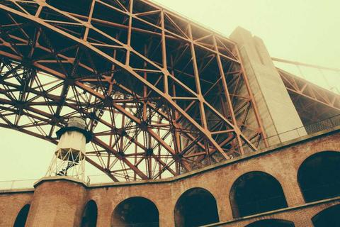
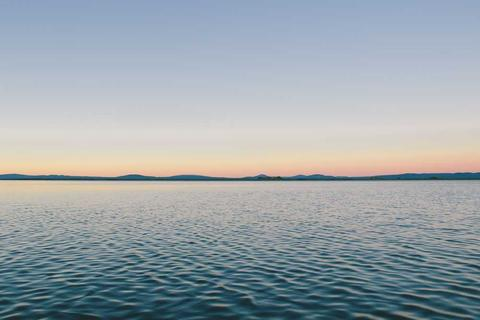
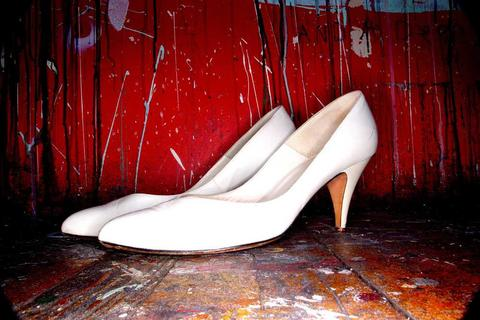
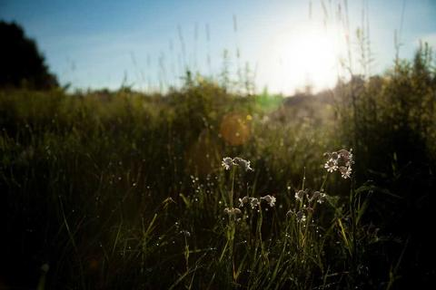
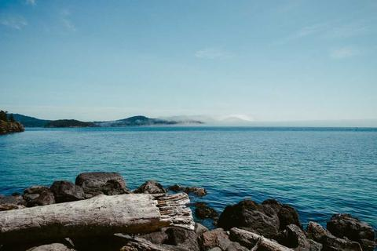

ARTnews · 今日 Mitchell Charbonneau’s Hyperrealist Sculptures Hide in Plain Sight 来源：ARTnews 
ARTnews · 今日 San Diego Museum of Art Lays Off 11 Employees, Citing ‘The Current Landscape’ 来源：ARTnews
ARTnews · 今日 'The Last Museum' Search Engine Serves Up Millions of Artwork Images from More Than 3,000 Institutions 来源：ARTnews
ARTnews · 今日 Former National Gallery Executive Accuses Institution of 'Soft Censorship' After DOGE Visit 来源：ARTnews 
ARTnews · 今日 New York's School of Visual Arts Reports One-Third Drop in Enrollment Since 2019, Faces Largest Budget… 来源：ARTnews 
ARTnews · 今日 Leading Industry Group ICOM Releases Statement in Support of Smithsonian Institution 来源：ARTnews 
ARTnews · 今日 Sale of a “Stunning” UK Fossil Collection to the Natural History Museum Abu Dhabi Sparks Controversy 来源：ARTnews 
ARTnews · 今日 Sotheby's Lands Another Blockbuster Collection as Blaquier Family Parts With $450 M. of Impressionist… 来源：ARTnews
ARTnews · 今日 20 Years After eBay, ‘The Devil Wears Prada’ Costumes Are Back at Auction, This Time at Christie’s 来源：ARTnews
ARTnews · 今日 The New York Gallery That Brought You Adrien Brody Is Suing a Collector for More than $800,000 in Unpaid… 来源：ARTnews
ARTnews · 今日 Admission Fees at the Lucas Museum, David Hockney's Reluctant Muse, and More: Morning Links for August 10… 来源：ARTnews
ARTnews · 今日 Atlanta Art Fair’s Third Edition Will Host 67 Galleries, Hailing From as Far as Korea, Spain, and Uganda 来源：ARTnews
ARTnews · 今日 RobbReport A Popular Hotel Reviewer Claims Aman’s New Resort Canceled His Stay and Called the Cops on Him 来源：ARTnews
ARTnews · 今日 WWD We Found the Very Best Shoes for Treadmill Walking to Power Your Next Workout 来源：ARTnews
ARTnews · 今日 Sportico Riverside Church Abuse Cases Mired in Courts 6 Months After First Trial 来源：ARTnews
ARTnews · 今日 IndieWire The TV Academy Hall of Fame Is Not Worried About Whether or Not You Have Too Many Emmys 来源：ARTnews